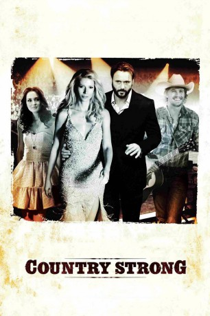

#3011 Country Strong
Auszeichnungen: für 1 Oscars nominiert
 gesehen am 19.01.2016
gesehen am 19.01.2016
 
 IMDB-Wertung: 6.3 / 10
IMDB-Wertung: 6.3 / 10  Metascore: 45
Metascore: 45 
Country Strong dreht sich um den aufstrebenden Countrysänger und Songschreiber Beau Williams (Garrett Hedlund), der mit der alternden Kollegin Kelly Canter (Gwyneth Paltrow) anbändelt. Deren Karriere ist auf dem absteigenden Ast, so dass das Liebespaar nun zusammen an seinem Durchbruch und ihrem Comeback arbeitet. Dass Kellys Manager auch gleichzeitig ihr Ehemann ist, macht die Sache natürlich nicht leichter.
Jahr: 2010
Dauer: 117 Minuten
FSK: 12
Land: USA Studio: Screen GemsTonspuren: DTS - ,
Untertitel: Deutsch,
Auflösung: 1080p (1920x800) Größe: 7700 MB
Genre: Drama, Musik
Regisseur: Shana Feste
Drehbuch: Shana Feste
Soundtrack: Michael Brook
Darsteller:
 Gwyneth Paltrow als Kelly Canter
Gwyneth Paltrow als Kelly Canter Tim McGraw als James Canter
Tim McGraw als James Canter Garrett Hedlund als Beau Hutton
Garrett Hedlund als Beau Hutton Leighton Meester als Chiles Stanton
Leighton Meester als Chiles Stanton- Marshall Chapman als Winnie
- Lari White als Hair Stylist
- Jeremy Childs als JJ
- Jackie Welch als Teacher
- Cinda McCain als Misty
- Terri Minton als James's Assistant
- Darrin Dickerson als Tex
- Alana Grace als Ginny
- Katie Groshong als Richard's Assistant
- Katie Cook als Gossip Show Host
- Travis Nicholson als PA #2
- Jeri Sager als Stylist
- Jim Lauderdale als Kelly's Bandmate
- Kelly Sutton als Reporter
- Stephanie Langston als Reporter
- Marc Allen als Paparazzo , uncredited
- Robert Lee Bell als Bartender , uncredited
- Stephen Blank als Bar Patron , uncredited
- Lawrence Bull Jr. als Taxi Driver , uncredited
- Rodney Burlin als Austin Fan / Houston Fan / Dallas Fan , uncredited
- Patrick Cranford als Venue Worker , uncredited
- Roger D. Eldridge als Dallas Fan , uncredited
- Wendy Keeling als Teacher , uncredited
- Terrence Lening als Dallas fan , uncredited
- Erin Naifeh als Extra , uncredited
- Jim O'Rear als Roadie , uncredited
- Kayla Perkins als Houston Fan , uncredited
- Robin Smotherman als Restaurant Patron / Fan , uncredited
- Erik A. Williams als Busboy , uncredited
- Chris Woodson als Security , uncredited
- J.D. Parker als Joe
- Lisa Stewart als Travis' Mom
- Gabe Sipos als Travis
- Sandra Harris als Orderly
- Megan Henderson als Megan Henderson
- Dan Beene als Bob
- Reegus Flenory als Security Guard
- Ed Bruce als Clint
- Candace Michelle Coffee als Denise
- Adam Skaggs als PA #1
- Denitia Odigie als PR Girl in Classroom
- Jeffrey Buckner Ford als Richard
- Kirt Lehew als Biker
- Ranjit Bhullar als Doctor
- Tina White als Interviewee
- Brett Warren als Jesse Clark
Datei: X:\2010(A-F)\Country Strong (2010, FSK12, 1920x800).mkv seit 19.01.2016
Festplatte: HD 2009(G-Z)-2010(A-F)
 Es gibt insgesamt 95 Filme in der Gruppe '2010(A-F)'
Es gibt insgesamt 95 Filme in der Gruppe '2010(A-F)'